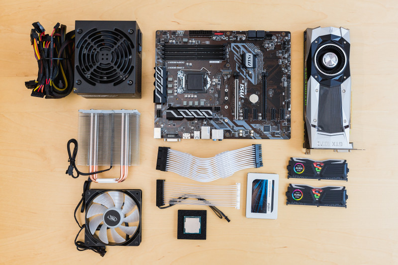

There are many reasons to why you should build your own PC instead of buying one already made from the store or sent to you from another outlet. Firstly, it's more cost efficient, 9 times out of 10 you will find that building your own pc and picking your own parts equals a lower price than buying it pre-made. This level of control from making a very cheap computer for say sending emails or a more expensive one to run games or editing software allows for you to not only make a computer that's perfect for you but also making a computer that serves every need that ‘you’ have instead of buying a more expensive computer that covers a wide range of things that you might not even use and is more expensive, therefore making it a more cost effective choice.

Building your own PC means that you can constantly upgrade it. A store bought pc can normally be locked or made in a way that is not easy to update, this means that when one part of the computer may be getting old or stops working a solution will be to take it to an expensive shop to be fixed separately or to buy a new system altogether. If you build the PC yourself, you can simply remove this piece and replace it with the new one whenever you need to which once again ties into the idea that building your own PC is more cost efficient.
The customization of your PC is also a big factor as you get to choose every part that goes into your computer from a card to the lights in it (if you decide to have them) and even the operating system you use meaning that the system you create is through and through of your own design and exactly what you want or like.

Another thing is that building a PC give you skills that you'll have forever, not a lot of people have the knowledge or skill to fix computers and in a world where we rely more and more on computers having those skills and knowing what parts to change and how to build one can save not only you but all your family and friends money. It should also benefit you in your work giving you higher skills then the next person along and making you more desirable. This then means there is no need for any tech support in the future because ‘you’ are the type support! You have the knowledge and the know-how on how to build and maintain a PC so therefore when you run into any problems you are the go-to person and you don't need others help.
Also building PC sharpens your problem solving skills because as stated before if we need to replace a small part of your computer or if your computer stops working for any reason you're the one who can figure it out and you're the one that can dissect your computer and pick which part are not working and how you will solve that issue. This is a skill that you can use anywhere in life not just with your PC. 
Finally building a PC is just fun! It’s a fun process to put all the parts together and make it work for the first time, it's a fun process to re-do it again for friends or family or to update your old parts. You can then not only use but also admire a PC that you know you made which gives you more confidence and a higher sense of self-worth as you're using something that you built with your own hand.